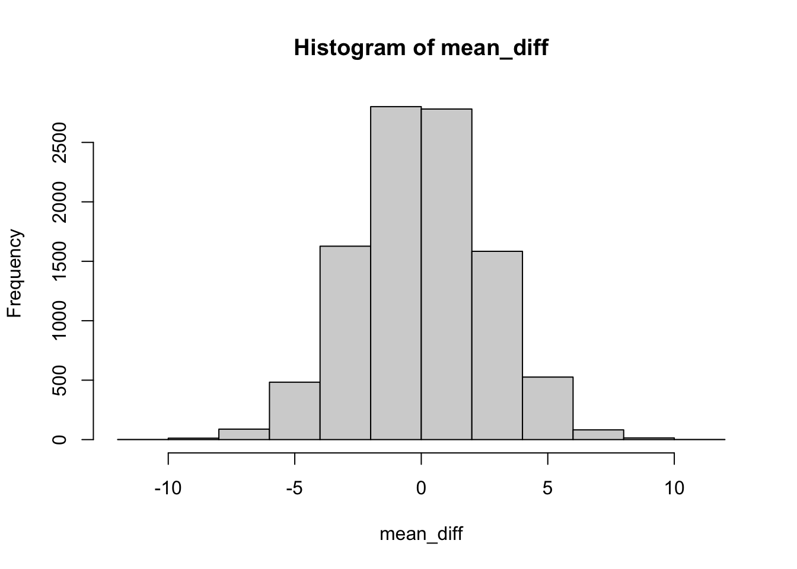

Last updated: 2022-05-02
Checks: 7 0
Knit directory: stats-in-medicine/
This reproducible R Markdown analysis was created with workflowr (version 1.7.0). The Checks tab describes the reproducibility checks that were applied when the results were created. The Past versions tab lists the development history.
Great! Since the R Markdown file has been committed to the Git repository, you know the exact version of the code that produced these results.
Great job! The global environment was empty. Objects defined in the global environment can affect the analysis in your R Markdown file in unknown ways. For reproduciblity it’s best to always run the code in an empty environment.
The command set.seed(20220401) was run prior to running
the code in the R Markdown file. Setting a seed ensures that any results
that rely on randomness, e.g. subsampling or permutations, are
reproducible.
Great job! Recording the operating system, R version, and package versions is critical for reproducibility.
Nice! There were no cached chunks for this analysis, so you can be confident that you successfully produced the results during this run.
Great job! Using relative paths to the files within your workflowr project makes it easier to run your code on other machines.
Great! You are using Git for version control. Tracking code development and connecting the code version to the results is critical for reproducibility.
The results in this page were generated with repository version 7077505. See the Past versions tab to see a history of the changes made to the R Markdown and HTML files.
Note that you need to be careful to ensure that all relevant files for
the analysis have been committed to Git prior to generating the results
(you can use wflow_publish or
wflow_git_commit). workflowr only checks the R Markdown
file, but you know if there are other scripts or data files that it
depends on. Below is the status of the Git repository when the results
were generated:
Ignored files:
Ignored: .Rhistory
Ignored: .Rproj.user/
Ignored: data/Unit_1_lab_manual.docx
Ignored: data/classdata.xlsx
Ignored: data/covid_data.xlsx
Note that any generated files, e.g. HTML, png, CSS, etc., are not included in this status report because it is ok for generated content to have uncommitted changes.
These are the previous versions of the repository in which changes were
made to the R Markdown (analysis/unit-5.Rmd) and HTML
(docs/unit-5.html) files. If you’ve configured a remote Git
repository (see ?wflow_git_remote), click on the hyperlinks
in the table below to view the files as they were in that past version.
| File | Version | Author | Date | Message |
|---|---|---|---|---|
| Rmd | 7077505 | elliothershberg | 2022-05-02 | Publish unit 5 |
| html | 2e1a371 | elliothershberg | 2022-04-25 | Build site. |
| Rmd | e1e810a | elliothershberg | 2022-04-25 | Publish Unit 5 notes. |
| html | 4ec3381 | elliothershberg | 2022-04-25 | Build site. |
| Rmd | c0336a9 | elliothershberg | 2022-04-25 | wflow_publish(c("analysis/index.Rmd", "analysis/unit-5.Rmd")) |
Notes from Unit 5: Statistical Inference
\[\sigma_{\hat p} = \sqrt{\frac{p(1-p)}{n}}\]
\[ Z = \frac{effect \, size - null \, value}{standard \, error} \]
You measure weight changes in 10 adults who have completed a weight loss program. Because of the small sample size, you will need to use a T value rather than a Z value when building the confidence interval for the mean weight loss. What is the correct T value if you want to build a 99% confidence interval?
qt(1 - 0.01 / 2, df = 9)[1] 3.249836In a study of 100 adults who completed a weight loss program, 40 lost at least 5 kg. Calculate the 95% confidence interval for the true proportion of adults who lose at least 5 kg using this particular weight loss regimen. Recall that proportions are normally distributed with a standard error of \(\sqrt{\frac{p(1-p)}{n}}\). (You may use the observed proportion to calculate the standard error.)
p <- 0.4
n <- 100
se <- sqrt((p * (1 - p) ) / n)
# the z-value for a 95% confidence interval
z <- qnorm(1 - 0.05 / 2)
p - z * se[1] 0.3039818A study of 1000 people who were randomly assigned to receive an experimental vaccine (n=500) or a placebo vaccine (n=500) found that 5% of the vaccinated group developed the disease versus 15% of the placebo group. The observed difference between the groups was thus -10%; and the 95% confidence interval was -6% to -14%. TRUE or FALSE: The reduction in infections in the vaccine group is statistically significant at p< .05.
I think this is true because even outside of the 95% confidence interval, it is a reduction from the control.
Smoker odds ratio:
smoker_p <- 25 / (25 + 15)
smoker_odds <- smoker_p / (1 - smoker_p)
control_p <- 75 / (75 + 85)
control_odds <- control_p / (1 - control_p)
odds_ratio <- smoker_odds / control_odds
odds_ratio[1] 1.888889ln_odds <- log(odds_ratio)
ln_odds[1] 0.6359888se <- sqrt(
(1 / 25) +
(1 / 15) +
(1 / 75) +
(1 / 85)
)
se[1] 0.3629941z <- qnorm(1 - 0.05 / 2)
print("Lower:")[1] "Lower:"ln_odds - z * se[1] -0.07546657print("Upper:")[1] "Upper:"ln_odds + z * se[1] 1.347444print("Lower:")[1] "Lower:"exp(ln_odds - z * se)[1] 0.9273107print("Upper:")[1] "Upper:"exp(ln_odds + z * se)[1] 3.847579p_data_given_heads <- (0.8)^2
p_data_given_tails <- (0.2)^2
p_data_given_fair <- (0.5)^2
p_total <-
1/3 * p_data_given_heads +
1/3 * p_data_given_tails +
1/3 * p_data_given_fair
# so,
ans <- (0.64 * 1/3) / p_total
ans[1] 0.688172bayes_factor <-
p_data_given_heads /
(p_data_given_tails * 0.5 + p_data_given_fair * 0.5)
bayes_factor[1] 4.413793(1 / 0.05)^2[1] 400mean_diff <- 0
for (i in 1:10000) {
girls <- rnorm(30, 60, 10)
boys <- rnorm(30, 60, 10)
mean_diff[i] <- mean(girls) - mean(boys)
}hist(mean_diff)
mean(mean_diff)[1] 0.003364279sd(mean_diff)[1] 2.589515sum(mean_diff > 5) / 10000[1] 0.0267
sessionInfo()R version 4.1.1 (2021-08-10)
Platform: x86_64-apple-darwin17.0 (64-bit)
Running under: macOS Big Sur 10.16
Matrix products: default
BLAS: /Library/Frameworks/R.framework/Versions/4.1/Resources/lib/libRblas.0.dylib
LAPACK: /Library/Frameworks/R.framework/Versions/4.1/Resources/lib/libRlapack.dylib
locale:
[1] en_US.UTF-8/en_US.UTF-8/en_US.UTF-8/C/en_US.UTF-8/en_US.UTF-8
attached base packages:
[1] stats graphics grDevices utils datasets methods base
other attached packages:
[1] workflowr_1.7.0
loaded via a namespace (and not attached):
[1] Rcpp_1.0.7 highr_0.9 compiler_4.1.1 pillar_1.6.4
[5] bslib_0.3.1 later_1.3.0 git2r_0.29.0 jquerylib_0.1.4
[9] tools_4.1.1 getPass_0.2-2 digest_0.6.29 jsonlite_1.7.2
[13] evaluate_0.14 tibble_3.1.6 lifecycle_1.0.1 pkgconfig_2.0.3
[17] rlang_0.4.12 rstudioapi_0.13 yaml_2.2.1 xfun_0.29
[21] fastmap_1.1.0 httr_1.4.2 stringr_1.4.0 knitr_1.37
[25] sass_0.4.0 fs_1.5.2 vctrs_0.3.8 rprojroot_2.0.2
[29] glue_1.6.0 R6_2.5.1 processx_3.5.2 fansi_0.5.0
[33] rmarkdown_2.11 callr_3.7.0 magrittr_2.0.1 whisker_0.4
[37] ps_1.6.0 promises_1.2.0.1 htmltools_0.5.2 ellipsis_0.3.2
[41] httpuv_1.6.5 utf8_1.2.2 stringi_1.7.6 crayon_1.4.2